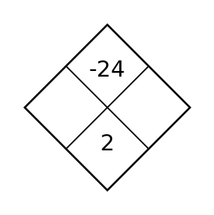
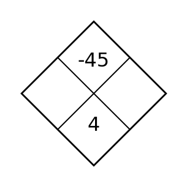
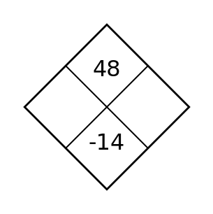
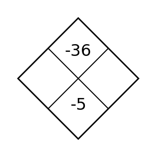
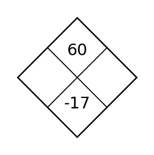

1 · Solve / Equation Fluency
Solve each equation. Show your steps.
- \(4x-9=19\)
- \(2(x+3)=18\)
Solve · diamond · planned I Can retrieval · planned I Can retrieval
Try without a calculator first; use one if you need it.
Solve each equation. Show your steps.
Find the two side integers. Their product goes on top and their sum goes on the bottom.

A student plots the point \((-4,3)\) by moving up 4 and then left 3 from the origin. Explain the mistake and describe the correct moves.
Substitute \(x=-3\) into \(4x^2-2x\) and evaluate. Show your substitution.
Solve · diamond · planned I Can retrieval · planned I Can retrieval
Try without a calculator first; use one if you need it.
Solve each equation. Show your steps.
Find the two side integers. Their product goes on top and their sum goes on the bottom.

Find the slope of the line through points A and B. Show rise over run.
The rule is \(y=2x-3\). Complete the missing outputs, then add one more input-output pair that follows the rule.
| x | −2 | 0 | 3 | 5 |
|---|---|---|---|---|
| y | −7 | −3 | ___ | ___ |
Solve · diamond · planned I Can retrieval · planned I Can retrieval
Try without a calculator first; use one if you need it.
Solve each equation. Show your steps.
Find the two side integers. Their product goes on top and their sum goes on the bottom.

Maya estimates \(19.8\times 5.1\approx100\), but her calculator shows \(1{,}009.8\). Is the calculator result reasonable? Explain using her estimate.
A machine takes input \(2\) and gives output \(9\). It takes input \(4\) and gives output \(17\). Write both input-output ordered pairs. Which coordinate is the input?
Solve · diamond · planned I Can retrieval · planned I Can retrieval
Try without a calculator first; use one if you need it.
Solve each equation. Show your steps.
Find the two side integers. Their product goes on top and their sum goes on the bottom.

Plot \(A(3,-2)\) and \(B(-4,2)\) on the coordinate plane. Label both points.
A tank contains 54 liters of water. Six minutes later, it contains 30 liters. Assuming the amount changes at a constant rate, find the rate of change (in liters per minute) and explain what the sign means.
Solve · diamond · planned I Can retrieval · planned I Can retrieval
Try without a calculator first; use one if you need it.
Solve each equation. Show your steps.
Find the two side integers. Their product goes on top and their sum goes on the bottom.

Find the slope of the relationship in the table. Show the change in \(y\) and the change in \(x\).
| x | 0 | 3 | 7 |
|---|---|---|---|
| y | 11 | 5 | −3 |
The rule is \(y=4x+3\). The output is \(-13\). Find the missing input, and check it in the rule.